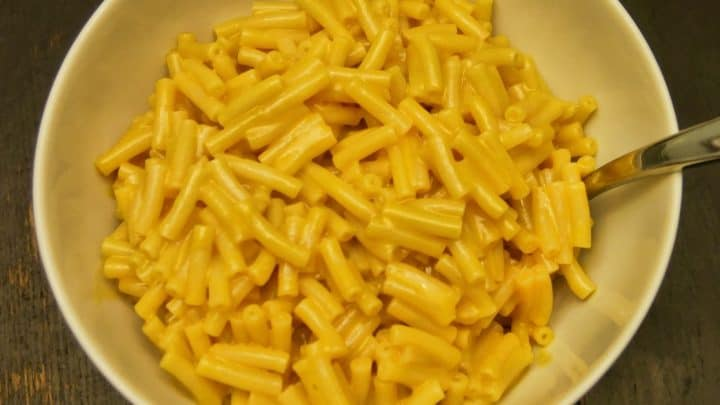

Kraft Mac n Cheese

Description
I used to love Kraft Mac and Cheese but now I can't stand it I am putting it here because it has a simple recipe
Ingredients
- Milk
- Noodles
- Cheese (powder/slice)
- Butter
- Ketchup if you're into that
Steps
- Boil water
- Add noodles
- Cook noodles for like 7 or 8 minutes I think
- Stare at the pot longingly
- Strain noodles
- Add a slice of the individually wrapped American cheese, and also butter and milk and the processed powder stuff